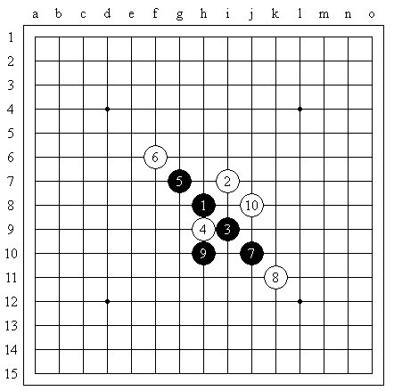
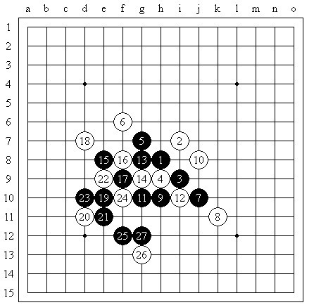
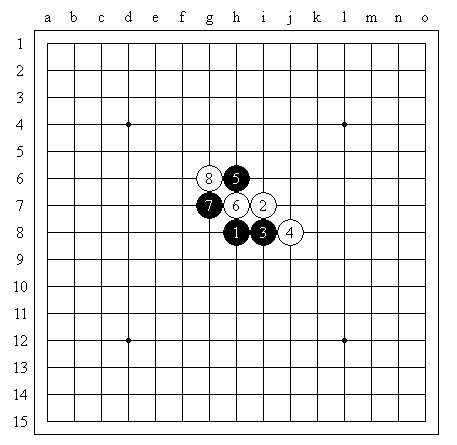
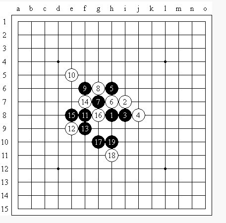
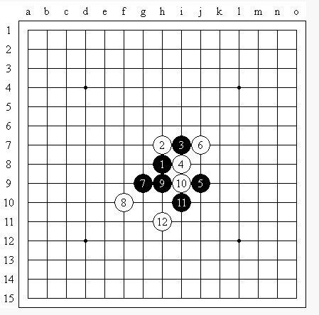
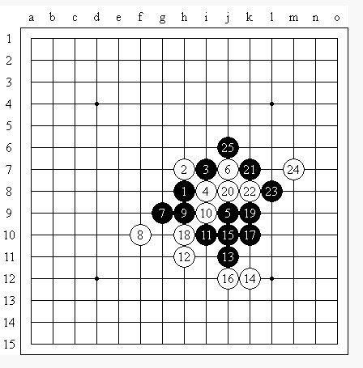
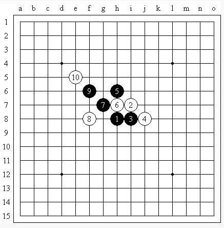
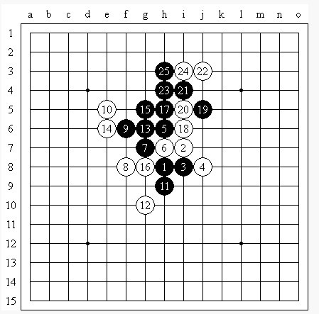
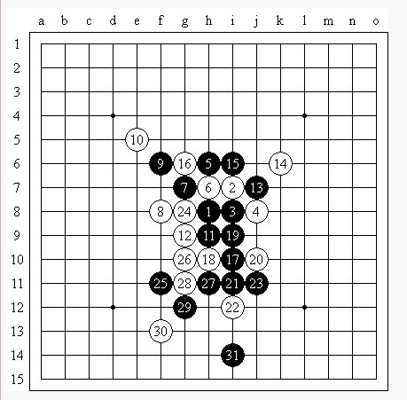
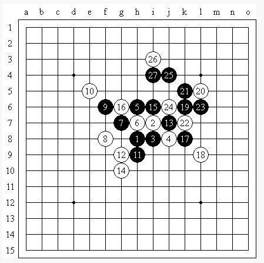

作者：DannyKao 转自百度连珠吧
在对弈时我们经常遇见很多棋形，有些棋形我们管它们叫做必胜形，如下图

此图为浦月一打必胜定式的一个分支，以下一套经典VCT


相比之下，也许有人不知道，其实第一图的必胜形还存在于云月一打必胜定式中，并且更为简单




通过对这两个定式的学习，想必你一定可以分析出此局部必胜形成立所需的条件，比较明显的就不说了，请注意3-17这条线，这是这套VCT的一个关键，如果这条线最后不能形成眠三或活二的话，那么这个局部用这种方法就攻不出来了。
我们再看一个例子

这是花月一打必胜定式的一个分支，以下经典VCT


下面则是云月的一打必胜定式的一个分支


相信很多爱好者都下出过这个局面，但是如果现在要连续进攻是没有VCT的，如果你对上面那个花月的局部必胜形非常了解的话，想必能走出11=h9这样的妙手，这时如果白棋要挡住新生成的这个活二的话，那么则有如第六图线路的VCT


并且你会发现，这个形中11与1-9的眠三相通的线路最隐蔽且最重要
那么白棋之后的强防自然在这条线上，但是黑棋的活二就不无法阻挡了，事实证明h9是云月这路一打必胜定式分支的必胜点。
参见以下两图


如果白14反向，则


哇喔，这不就是开头介绍的必胜形么？
下面是银月一
引用：
原文由 自来水 发表于 2012-4-3 8:43:30 :
图再次挂了。。。
崩溃。。。N多的图。。。再发
引用：刚又重发一遍。。。还看不到么？
原文由 专业被虐 发表于 2012-4-3 9:42:23 :
好多图都看不到啊

（1,3,5...)等奇数序的还是不行...
引用：
原文由 自来水 发表于 2012-4-3 10:21:17 :（1,3,5...)等奇数序的还是不行...
啥意思啊？1,3,5。。等奇数图片还是不显示么？
老老实实按照图片上传的，米有偷懒复制粘贴啊。。。
好吧，米招了，给个原文链接：
掌握必胜棋形使你的计算更简单
http://tieba.baidu.com/p/1051111097
花月和蒲月就是必胜的基础
计算得靠心境，呵呵
喜欢平衡，但计算很重要